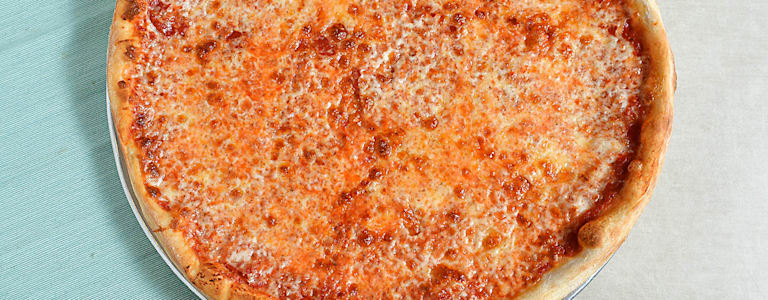
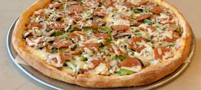
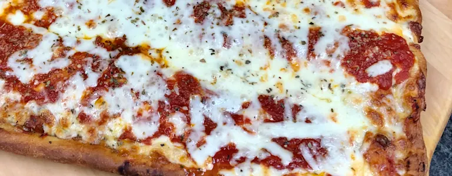
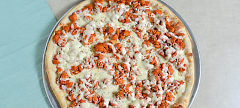

Mario’s Pizzeria opened its first pizzeria in Oyster Bay, a hamlet on the north shore of Long Island in 1969. Since then the entire family has been providing the highest quality meals with exceptional service in a fast casual dining experience for over 48 years. How do we know it’s the best? You, our loyal customers have told us over the years with the many reviews and feedback.
From Oyster Bay, Syosset, Plainview, Westbury and Seaford, Mario’s has become a household name that offers online ordering and convenience to our many customers with fast and reliable delivery service that covers practically all of Nassau County. Every pizza is handmade from scratch with dough and sauce that is made fresh daily with care and special attention. From pioneering “pizza by the slice” with an extensive variety of gourmet pizzas using the finest quality ingredients to serving our communities with sponsorships and donations, we continue to define what a great Long Island pizzeria should be.
But we are more than a “Pizza Place”. Mario’s is a family. Through the years our dedicated staff has grown yet we are proud to say that a majority of our employees now have their own families working with us. They have become a part of our family as we look forward to spending many milestones with them.
Our main goal is to commit to quality, listen to our customers and keep them happy so that we can continue to improve. We welcome you to come experience what all our customers are saying. Place your order today, let us do the rest!
| Name | Price | Picture |
|---|---|---|
| Neapolitan Round | $22.25 |  |
| Mario's Special Pizza | $5.50 |  |
| Sicilian Square | $22.25 |  |
| Buffalo Chicken Pizza | $6.505 |  |